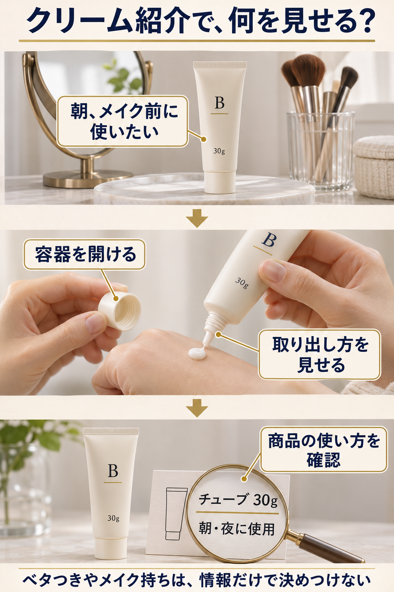

「朝に使える？」に答える原稿から作る。
朝に使いたい人へ、使用案内と取り出し方を見せます。
スキンケアクリームの紹介を例にしてみましょう。今回は「朝に使いたいけど夜用か分からない。中身の取り出し方も見たい」という人に向けます。

- 1買う前の疑問
「朝のメイク前に使いたいけれど、夜用か分からず迷っていませんか？」
映すもの：鏡とメイク道具の横に保湿クリームBを置く。 - 2商品の仕様
「このクリームは、朝も夜も使えると案内されています。」
映すもの：Bの商品ページやパッケージで、朝・夜に使えることが分かる表示を映す。 - 3使う場面
「キャップを開けて、先からクリームを出します。30gのチューブ入りです。」
映すもの：Bのキャップを開けて中身を出し、「30g」の表示も映す。 - 4最後の案内
「詳しい使い方と購入条件は、商品ページで確かめてください。」
映すもの：Bの商品ページで、使い方と購入条件を確認する場所を映す。
仕様を並べるだけで終わらせず、選ぶ理由まで伝える。
商品の仕様
→朝・夜に使用可
チューブ容器
買う人にとっての意味
→朝に使う候補に残せる
取り出し方を見て選べる
映像で確かめてもらう
朝・夜の使用案内
開けて出す手元
「30gのチューブです」だけだと、朝に使えるかは分かりません。「朝も使える」と案内を見せれば、朝のクリームを探している人の候補になります。さらに取り出す場面を見せて、自分の支度に合う容器かを選んでもらいます。
自分の商品も、買う前の迷いに答える仕様を選び、確かめられる映像を付けます。
容器を二つ比べる場合
A｜ジャー（広口容器）50g朝も夜も使用可
↔B｜チューブ30g朝も夜も使用可
容器で迷う人に向けて紹介するなら、ふたを開けて中身を出すところを、AとBで同じ順に映します。容量と容器の違いがひと目で伝わります。
4場面のセリフと映像を決める
原稿と撮る内容を保存して使う
原稿の商品名・仕様・使い方は商品ページと比べます。セリフが各場面の映像で伝わるかも確かめます。
4場面とも自分の商品の内容になり、買う前の疑問に答えられれば原稿は完成です。保存したセリフと映すものを見ながら、撮影や編集を進めてください。